To see whether the tools help, the same model was given the same one-line request twice: once with plain Blender, where it writes code, renders and looks at the result, and once with Blender Studio. Thirteen such pairs were run, with Claude Haiku 4.5, Haiku 5.5, Sonnet 5.5 and Opus 5.5, and Gemini 3.6 Flash. Claude Opus 5.5 then judged each pair blind, under neutral file names.
Tokens are the units AI models read and write in, and what they are billed by. "Tokens read" counts everything sent to the model across all its requests, including repeats.
Claude Haiku 4.5 Ceramic mug product shot
Plain Blender
Render 8 of 8
- Judge: 1.0 / 10
- 208 s total, 93 s on the model
- 8k tokens written, 282k read
- 24 tool calls, 3 failed
Blender Studiojudged better
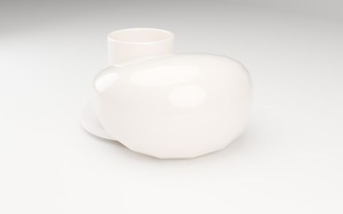
Render 4 of 4- Judge: 3.0 / 10
- 207 s total, 53 s on the model
- 4k tokens written, 271k read
- 20 tool calls, 0 failed
Judge: “Neither is acceptable, but the first at least shows a glossy ceramic cup and saucer in a soft studio setting (though a huge malformed blob, apparently a broken handle, blocks the mug), while the second is a flat, faceted, extreme close-up of a saucer edge with no recognisable mug at all.”
Claude Haiku 4.5 Low-poly campsite at dusk
Plain Blender
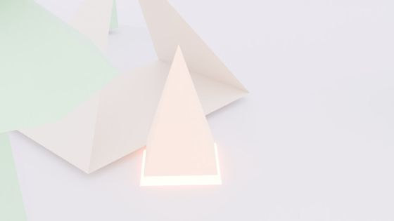
Render 16 of 16- Judge: 1.0 / 10
- 1638 s total, 177 s on the model
- 14k tokens written, 841k read
- 40 tool calls, 4 failed
- Did not finish: it used all 40 turns
Blender Studiojudged better
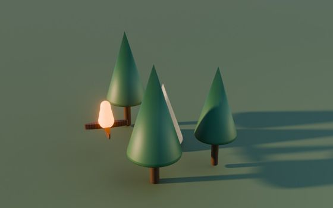
Render 3 of 3- Judge: 5.0 / 10
- 139 s total, 57 s on the model
- 4k tokens written, 143k read
- 28 tool calls, 0 failed
Judge: “The second shows three recognisable pines and a glowing campfire in warm low light, though its tent is almost entirely hidden behind a tree and the trees are smooth rather than low-poly, while the first is a blown-out, washed-out crop of cut-off abstract shapes with no dusk mood and nothing clearly readable as a campsite.”
Claude Haiku 4.5 Toy robot waving
Plain Blender
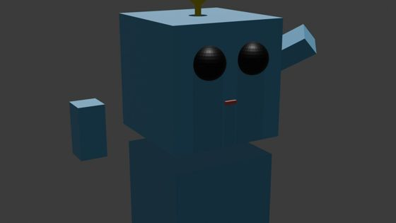
Render 15 of 15- Judge: 2.5 / 10
- 179 s total, 144 s on the model
- 11k tokens written, 598k read
- 33 tool calls, 3 failed
Blender Studiojudged better
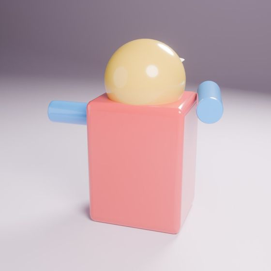
Render 13 of 13- Judge: 4.0 / 10
- 256 s total, 118 s on the model
- 11k tokens written, 920k read
- 78 tool calls, 3 failed
Judge: “The second is a cleanly lit, well-framed render with pleasing glossy toy-like pastels, but it shows the figure from behind with no face and no clear wave, while the first at least reads as a robot face with eyes, mouth and antenna yet is badly cropped, murky, flat-shaded and has detached floating arms.”
Claude Haiku 5.5 Ceramic mug product shot
Plain Blender
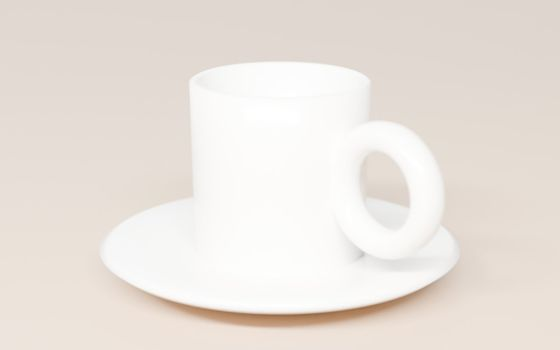
Render 2 of 2- Judge: 4.0 / 10
- 128 s total, 43 s on the model
- 8k tokens written, 68k read
- 8 tool calls, 0 failed
Blender Studiojudged better
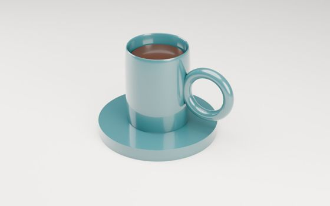
Render 5 of 5- Judge: 5.0 / 10
- 177 s total, 98 s on the model
- 12k tokens written, 467k read
- 27 tool calls, 0 failed
Judge: “The first reads clearly as a glazed teal mug with coffee and has visible form and reflections despite a clunky slab saucer and small, high-angle framing, while the second fills the frame better with a nicer saucer shape but is so overexposed and soft that the white ceramic loses nearly all shape and surface detail.”
Claude Haiku 5.5 Low-poly campsite at dusk
Plain Blender
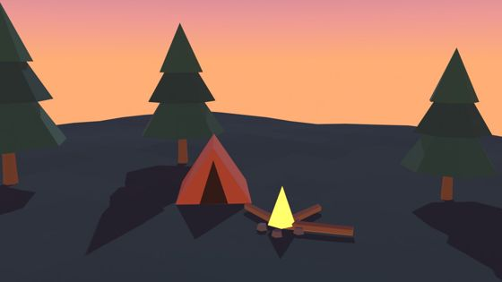
Render 2 of 2- Judge: 6.0 / 10
- 70 s total, 59 s on the model
- 13k tokens written, 37k read
- 5 tool calls, 0 failed
Blender Studiojudged better
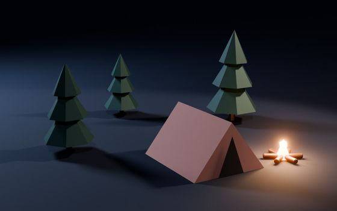
Render 4 of 4- Judge: 7.0 / 10
- 87 s total, 32 s on the model
- 6k tokens written, 265k read
- 26 tool calls, 0 failed
Judge: “The second has a campfire that actually lights the scene with warm falloff and soft shadows, giving real mood and form, whereas the first has a clearer dusk sky but a flat, unlit fire, a tiny tent and trees cropped at the frame edges.”
Claude Haiku 5.5 Toy robot waving
Plain Blenderjudged better
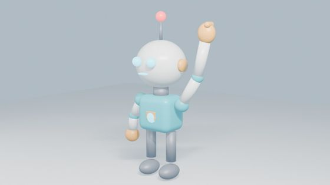
Render 3 of 3- Judge: 6.5 / 10
- 74 s total, 55 s on the model
- 11k tokens written, 102k read
- 8 tool calls, 0 failed
Blender Studio
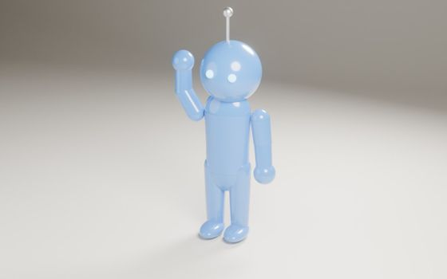
Render 3 of 3- Judge: 4.0 / 10
- 147 s total, 25 s on the model
- 4k tokens written, 241k read
- 21 tool calls, 0 failed
Judge: “The first reads clearly as a friendly toy robot, with a boxy torso, antenna, face and a considered pastel palette with a distinctly raised arm, whereas the second is a single-colour blue balloon-like figure with no mouth and little robot character, despite slightly punchier lighting.”
Claude Sonnet 5.5 Ceramic mug product shot
Plain Blender
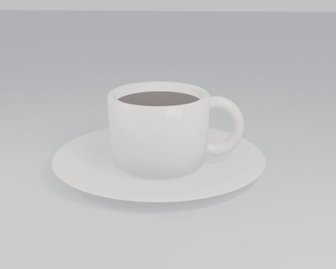
Render 2 of 2- Judge: 4.0 / 10
- 22 s total, 15 s on the model
- 2k tokens written, 12k read
- 4 tool calls, 0 failed
Blender Studiojudged better
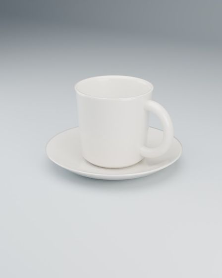
Render 2 of 2- Judge: 6.0 / 10
- 84 s total, 16 s on the model
- 2k tokens written, 91k read
- 10 tool calls, 0 failed
Judge: “The first reads as a cleaner catalogue shot with a seamless gradient backdrop, a glossier ceramic and a more refined mug shape, while the second is flat and grey with a visible horizon line, a muddy matte coffee surface and a saucer that looks like a flat disc, though both are low-contrast white-on-pale and the first leaves too much empty frame.”
Claude Sonnet 5.5 Low-poly campsite at dusk
Plain Blender
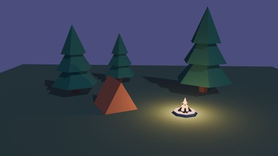
Render 3 of 3- Judge: 6.0 / 10
- 30 s total, 16 s on the model
- 2k tokens written, 20k read
- 6 tool calls, 1 failed
Blender Studiojudged better
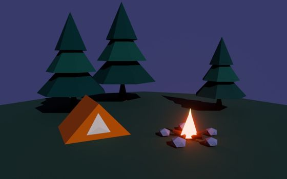
Render 4 of 4- Judge: 7.0 / 10
- 68 s total, 37 s on the model
- 6k tokens written, 153k read
- 10 tool calls, 1 failed
Judge: “First has a more readable tent with a door, a convincing campfire with stones, logs and an emissive glow, and a tighter framing, whereas second's fire is a small ambiguous blob, the tent is a plain wedge, and the visible ground-plane edge and empty foreground weaken it, despite its nicer pool of firelight on the ground.”
Claude Sonnet 5.5 Toy robot waving
Plain Blender
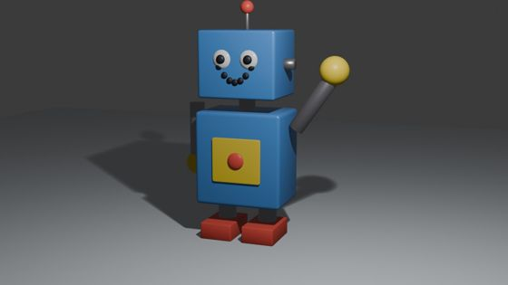
Render 2 of 2- Judge: 6.5 / 10
- 29 s total, 19 s on the model
- 3k tokens written, 13k read
- 4 tool calls, 0 failed
Blender Studio
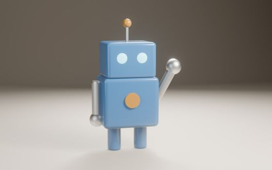
Render 2 of 2- Judge: 7.0 / 10
- 44 s total, 24 s on the model
- 4k tokens written, 148k read
- 30 tool calls, 0 failed
Judge: “The second reads more clearly as a friendly waving toy robot thanks to its smiling face, googly eyes and primary toy colours, though the first has softer lighting, glossier materials and cleaner framing but lacks a mouth and has a stiff, less expressive wave.”
The judge disagreed with itself when the order was swapped, so this counts as a tie.
Claude Opus 5.5 Ceramic mug product shot
Plain Blenderjudged better
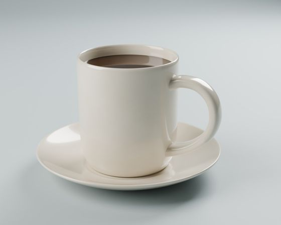
Render 3 of 3- Judge: 7.5 / 10
- 798 s total, 97 s on the model
- 10k tokens written, 47k read
- 6 tool calls, 0 failed
Blender Studio
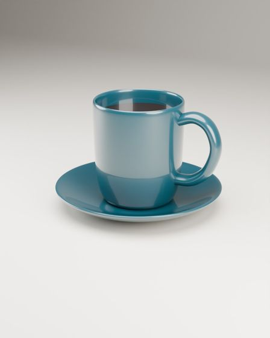
Render 3 of 3- Judge: 6.0 / 10
- 137 s total, 46 s on the model
- 5k tokens written, 110k read
- 15 tool calls, 0 failed
Judge: “The second fills the frame confidently with soft, shape-revealing light and a convincing glazed cream ceramic with believable coffee, while the first, despite an attractive teal glaze, sits small in a tall frame with too much empty space, flatter lighting and a hard-edged reflection band on the mug.”
Claude Opus 5.5 Low-poly campsite at dusk
Plain Blender
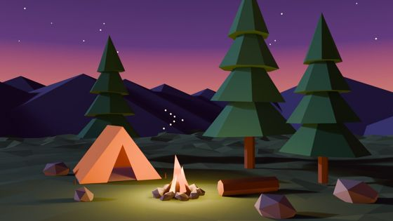
Render 3 of 3- Judge: 7.5 / 10
- 83 s total, 68 s on the model
- 7k tokens written, 39k read
- 7 tool calls, 0 failed
Blender Studio
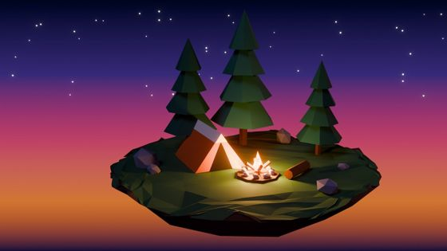
Render 5 of 5- Judge: 7.5 / 10
- 124 s total, 80 s on the model
- 9k tokens written, 178k read
- 14 tool calls, 1 failed
Judge: “Both show the tent, fire and three pines clearly, but the second's floating-island diorama has a stronger firelight glow on the tent, a richer dusk gradient and a cleaner, more deliberate composition, whereas the first has a tree cropped at the top, a flatter fire and a murkier ground.”
The judge disagreed with itself when the order was swapped, so this counts as a tie.
Claude Opus 5.5 Toy robot waving
Plain Blenderjudged better
Render 4 of 4
- Judge: 8.0 / 10
- 434 s total, 94 s on the model
- 10k tokens written, 67k read
- 9 tool calls, 1 failed
Blender Studio
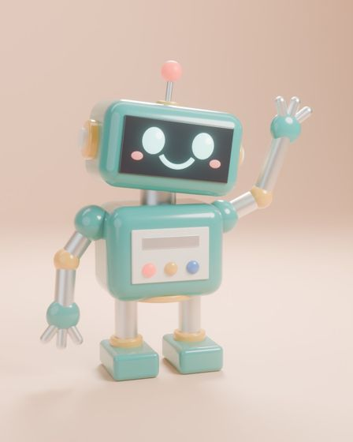
Render 5 of 5- Judge: 7.0 / 10
- 251 s total, 78 s on the model
- 8k tokens written, 295k read
- 29 tool calls, 0 failed
Judge: “The first sells the wave far better with an open five-fingered hand and motion lines, and its warm terracotta backdrop gives stronger colour contrast and depth than the second's softer, washed-out pastel scene with a less readable claw hand.”
Gemini 3.6 Flash Ceramic mug product shot
Plain Blender
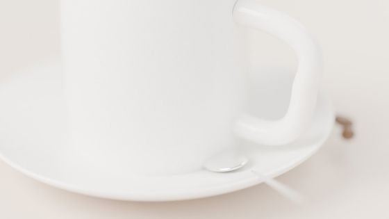
Render 1 of 1- Judge: 3.5 / 10
- 487 s total, 223 s on the model
- 34k tokens written, 180k read
- 9 tool calls, 5 failed
- Did not finish: it used all 9 turns
Blender Studiojudged better
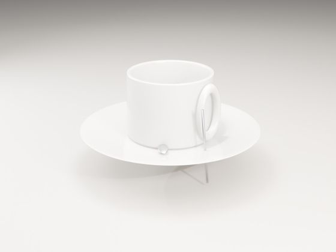
Render 2 of 2- Judge: 4.0 / 10
- 116 s total, 105 s on the model
- 5k tokens written, 76k read
- 28 tool calls, 6 failed
- Did not finish: daily allowance for gemini-3.6-flash used up
Judge: “The second shows the whole mug and saucer legibly despite a floating saucer, a broken spoon piercing the handle and flat washed-out lighting, whereas the first has softer, nicer materials but is cropped so tightly that the mug's rim and top are cut off and it fails as a product shot.”